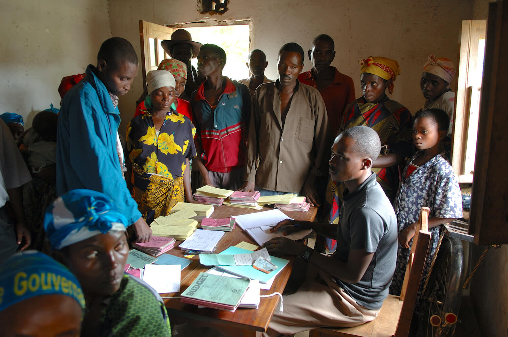

A new study predicts that melting glaciers in the North Atlantic will
cause a shift in malaria prevalence and transmission across the
African continent. The length of disease transmission is expected to
decrease across West Africa, where malaria is currently most prevalent,
and will begin affecting the malaria-free zones of the East African highlands.
Human malaria is caused by five species of Plasmodium, an obligate
parasite which has caused 1.5 billion cases of malaria and 7.6
related-deaths worldwide since the year 2000. The most dangerous
species of malaria is Plasmodium falciparum, which has been
responsible for 50% of all malaria cases.
Zitenga, Burkina Faso: Bibata brings her children to community
healthcare workers in order to receive anti-malarial drugs. The
government of Burkina Faso has allocated 11% to 15% of its budget
towards healthcare and the deployment of 17,000 healthcare workers
across the country. Here, a healthcare worker assesses Bibata’s
children for signs of malnutrition, a symptom of malaria. | Global
Financing Facility / Flickr
Due to its warmer and more humid climate, malaria is most prevalent in
Western Africa. Data collected between 2000 to 2017 have found that
93% of cases and 94% of malaria-related deaths worldwide occur in the
African continent. The main vectors which carry malaria in the most
affected regions of Africa are the female mosquitoes of the species
Anopheles funestus.
Malaria is climate sensitive and its transmission is seasonal, hence
any changes in climate can quickly increase or decrease the threat
that this disease poses. Anopheles funestus, and other
Anopheles mosquito vectors of malaria, thrive in environments
that have above 40% humidity in the air.
The incubation period of these mosquitoes, which is the time frame for
when the female mosquito becomes infectious, shortens with increasing
temperature. Past studies have observed that the minimum temperature
required for the Plasmodium to mature in certain mosquitoes is 17°C.
Thus, the prime regions for malaria to thrive and therefore pose the
greatest threat to human health, are those climates which experience a
temperature range between 17°C to 38°C, and with a humidity of above
40%. As of 38°C, Anopheles mosquitoes rapidly die, killing the
vector and ultimately stopping transmission.
Who is currently worst affected by malaria?
With the average global temperature increasing, the areas where
malaria is most prevalent may shift to different geographic locations.
Currently, many parts of Africa, Southeast Asia and South America are
most affected.
The Malaria Atlas Project, a database which tracks malaria incidents
and deaths worldwide, has recorded that the disease is most widespread
across Central Africa. Areas with over 70% disease prevalence are
Burkina Faso, Southern Guinea, the Democratic Republic of Congo and
Mozambique. Regions surrounding these locations vary between 30% to
60% in prevalence.
Prevalence rates approach zero north of the Sahel, which is the
climatic transition between the densely vegetative Congo Basin and the
dry, hot Sahara Desert. Other areas with very low prevalence rates are
East Africa, as well as Southern Namibia, Botswana and South Africa.
However, regions where the Anopheles mosquito vectors are
present, but too cold for Plasmodium development and
transmission, are likely to become more at risk when their climates
experience increased temperatures.

UNICEF provides highly-affected countries with mosquito nets, funds
for medical staff and treatment. Photo taken in North Kivu,
Democratic Republic of Congo. | Julien Harneis / Flickr
How do melting glaciers affect malaria distribution across the African continent?
Chemison and colleagues published a paper in
Nature
on 25 June 2021, which compared the projections of different climate
models on how malaria may be affected by anthropogenic climate change.
However, unlike previous studies, the team investigated how the
melting ice-sheets and permafrost all the way in the Arctic Circle
could influence the climate-sensitive mosquito vectors in Africa.
The meteorological system is not isolated to countries or continents,
and thus the smallest change or imbalance in one corner of the globe
can impact the climatic conditions in another. A large regulator of
global weather patterns is the Atlantic Meridional Overturning
Circulation (AMOC). The AMOC is a system of strong Atlantic Ocean
currents, which play a significant role in transporting heat, carbon
and freshwater worldwide.
Currently, the AMOC is driven by strong currents in the Southern
Hemisphere, which push warm water into the Northern Hemisphere and
redistribute heat. This causes the cold, dense waters in the North
Atlantic to sink, as warm water from the Southern Hemisphere reaches
the Northern Hemisphere and redistributes heat. As a result, water
vapour from the North Atlantic moves eastwards over Europe and Central
Africa via various wind currents.
‘The AMOC is slowing down due to increased levels of atmospheric carbon dioxide.’
During the past century, researchers have found that the AMOC is
slowing down due to increased levels of atmospheric carbon dioxide.
The increase of carbon dioxide in the atmosphere has caused a rise in
the water surface temperature of the North Atlantic Ocean, resulting
in more freshwater entering the ocean system from melting ice sheets.
Lead author Chemison explains that, ‘An additional supply of
freshwater in the Northern Atlantic would lead to a decrease in the
density of the cold surface water […] This effect would further slow
down the AMOC.’
The change of behaviour in ocean current speeds and evaporation rates
of the AMOC, can in turn alter rainfall and temperature trends over
the African continent. As malaria is a climate sensitive disease, its
range and transmission rates will follow suit.
Greenland ice sheet is being drained at an alarming rate. | NASA Earth Observatory / Flickr
Today, malaria occurs in regions with temperatures ranging between
22°C to 30°C, and with high rainfalls reaching between 100 to 300
millimetres per month. Areas free of malaria are those which
experience temperatures below 20°C or above 32°C, with little rainfall
of less than 50 millimetres per month.
A climate model, known as the Representative Concentration Pathway 8.5
(RCP8.5), estimates the impacts of anthropogenic climate change in a
very high baseline emission scenario. RCP8.5 projects an increase of
malaria prevalence in East Africa—a region currently with very low
prevalence—to around 60%, and that the length of the transmission
season will exceed 10 months.
However, one should note that many have critiqued this model, as it
takes a very aggressive stance when quantifying fossil fuel use in the
future. It models the extreme scenario, where no environmental
policies are successfully being implemented in order to hinder an
average 1.5°C to 2°C temperature increase.
‘East Africa, currently a region with very low malaria cases, is projected to increase to 60% malaria prevalence.’
For this reason, the team compared the results of RCP8.5 with several
other models. They found that a series of Mathematical Malaria Models
projected the same increase in East Africa as the RCP8.5, and that
this increase may occur as early as the 2040s.
Ethiopia, which is currently considered to be a relatively lower risk
country, at 8.56% prevalence below 2000 meters altitude, is expected
to reach a prevalence of 18%, with a transmission season said to last
three months during the 2040s. This change is associated with a
projected 3°C temperature increase and 40 millimetres of rainfall per
month in Ethiopia in the coming years.
On the other hand, according to the Mathematical Malaria Model, the
Sahel and Southern Africa are expected to have a decrease in Malaria
prevalence. This is because although there is also a projected
temperature increase of 1°C, the climates of these regions are very
arid and already exceed 30°C; creating an environment where
Anopheles mosquitoes are unable to survive.
Zanzibar, Tanzania: District malaria surveillance officer sleeps
under a mosquito net with her daughter. Each day she visits
households to test for malaria, provide necessary treatment, record
prevention measures and provide education on how people can best
protect their families. | U.S. Agency for International Development / Flickr
When the team compared these malaria distribution projections to
another model known as ICE1m, they found some contradictions. ICE1m
is a model which considers the additional influence of rapid ice-sheet
melting, such as the Greenland ice sheet, in its calculations.
ICE1m predicts a southward shift of the African rain-belt with the
slowing of the AMOC, which would mean that although it aligns with
the other two models, predicting that malaria prevalence will increase
in East Africa, it differs in that it also expects an increase in
Southern Africa—due to increased humidity.
The ICE1m model aligns with both the RCP8.5 and Mathematical Malarial
Models in that the malaria cases will decrease in the Sahel, even
reaching simulated prevalence rates of -4% to -8%. Essentially
creating new malaria-free zones.
Whilst these climate models provide much insight in what the future
may hold, there is evident discrepancy in some of their contrasting
outcomes. The full impact of a continuously slowing AMOC is
understandably hard to predict with complete certainty, as global
meteorological systems are extremely sensitive and intricate.
Future health and social impacts on East and South Africa
Each year, over 400,000 people die from malaria. Aside from the huge
health and social impacts that malaria has on people threatened by
this disease, it also has an economic impact. According to the Center
for Disease Control and Prevention, direct costs of battling this
endemic (i.e. treatment, healthcare, premature death) are estimated to
be $12 billion per year.
However, there are also indirect costs associated with the disease,
as those ill with malaria and those who die can cause a dent in the
work forces of countries with a high malaria prevalence, thus impeding
potential economic growth. According to Gallup and Sachs (2001), the
economic growth of countries five years after eliminating malaria,
was significantly higher than countries which still battle it.
‘Direct costs of battling this endemic are estimated to be $12 billion per year.’
Overall, multiple models have agreed in their prediction that there
will be an eastward and likely southward shift in areas that will be
worst affected by malaria across the African continent. Countries with
low prevalence now will need to anticipate a changing future, by
allocating funds and infrastructure to malaria prevention, diagnosis
and treatment.
West and Central Africa, which currently face the brunt of the malaria
endemic, may be alleviated in future. However, this does not mean
that the enemy is gone, it has just moved to a new battleground. It
is the highlands of East Africa that may need to prepare for the
future battle.
Chemison A., Ramstein G., Tompkins A. et al. (2021) Impact on an
accelerated melting of Greenland on malaria distribution over Africa.
Nature Communications. Volume 12, pages 3971.
Dima M., Nichita D., Lohmann G. et al. (2021) Early-onset of Atlantic
Meridional Overturning Circulation weakening in response to atmospheric CO2 concentration.
Nature Partner Journals: Climate and Atmospheric Science. Volume 27.
Gallup J. and Sachs J. (2001) The economic burden of malaria.
American Society of Tropical Medicine & Hygiene. Volume 64, volume 1.
Solomon A., Kahase D. and Alemayehu M. (2020) Trend of malaria prevalence in Wolkite health center: an implication towards the elimination of malaria in Ethiopia by 2030.
Malaria Journal. Volume 19, article 112.